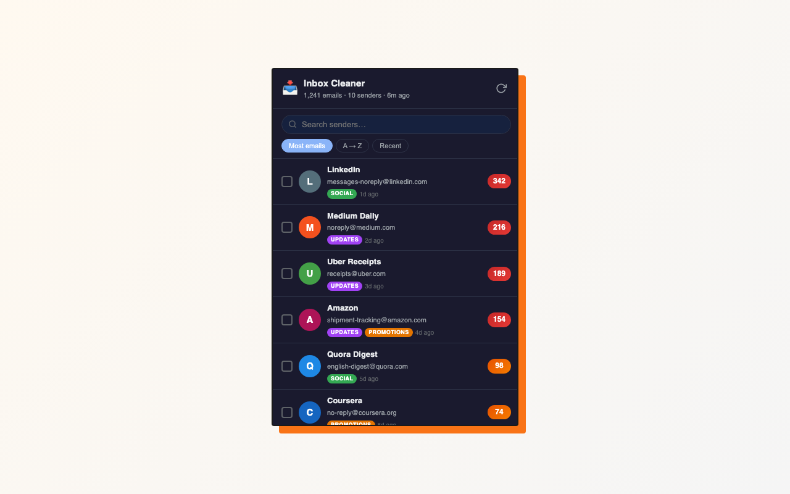
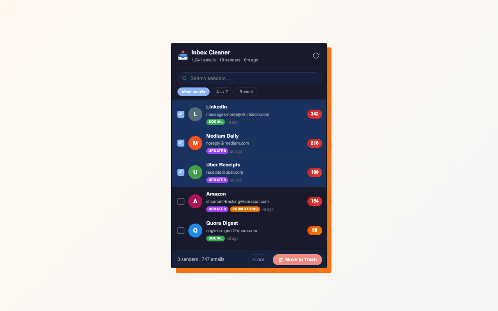

Inbox Cleaner ranks every sender by how many emails they've sent you — then moves the worst offenders to Trash in one click.
Inbox Cleaner is a free Chrome extension that scans all five Gmail category tabs, ranks every sender by email count, and moves all mail from the senders you pick to Trash — without asking you to sign in or connect your Google account.
One click from the Web Store. There's no account to create and nothing to connect.
It reads the sender and date off the conversation list Gmail already rendered — right there in the page.

Select as many as you like and clear them in one action. Everything lands in Trash, recoverable for about 30 days.

Being straight with you: the extension runs inside the Gmail page, so it can read what's on screen — that's how it counts your senders. The point is that nothing it reads ever leaves your browser.
Gmail's built-in select-all caps at 50 emails per page. Here's the difference.
| Feature | Gmail (built-in) | Typical cleaner apps | Inbox Cleaner |
|---|---|---|---|
| Requires connecting your Google account | No | Yes (OAuth) | No |
| Sends your data to a remote server | No | Yes | No |
| Ranks senders by how much they send you | No | Yes | Yes |
| Covers all 5 category tabs | — | Varies | Yes |
| Select more than 50 at a time | No | Yes | Yes |
| Price | Free | Free tier + paid | Free |
Install the extension, open Gmail, and hit Scan. Find the sender in the ranked list, tick its box, and click Move to Trash. Everything from that sender goes at once.
Gmail lets you select up to 50 emails per page and delete them by hand. Inbox Cleaner works through your whole inbox and clears every message from the senders you pick, without paging.
It never connects to your Google account — there's no sign-in and no API access. It reads the sender and date from the Gmail page you already have open, makes no network requests of any kind, and moves mail to Trash rather than deleting it. The source is on GitHub.
No. Mail moves to Trash, where Gmail keeps it for about 30 days. You can restore anything before that window closes.
It depends on your inbox. The extension reads your conversation list the way you would — by scrolling through it — so a large mailbox can take a few minutes. A progress indicator shows which category it's on.
No. It's a Chrome extension, so it needs desktop Chrome. Chrome doesn't support extensions on Android or iOS.
Scan your inbox, then select the senders responsible. Inbox Cleaner uses Gmail's own bulk action to clear every matching conversation in one go, however many there are.
Start with whoever sends you the most. Inbox Cleaner ranks every sender by count, so the biggest offenders are at the top — clear those first for the fastest win.
Yes. The scan covers your Promotions tab and lists each sender by volume. Select the ones you want gone and clear them together.
Unsubscribing stops what's coming; it doesn't touch what's already piled up. Use Inbox Cleaner to clear the backlog from that sender, then unsubscribe so it doesn't rebuild.
Sort by sender count and work top-down. A handful of senders usually account for most of an inbox, so clearing those few makes the biggest dent.
Yes. It works with whatever Gmail account is open in the tab, personal or Workspace. There's no separate sign-in step either way.
No — and this is the main thing that sets it apart. Inbox Cleaner never asks for your Google account. It works inside the Gmail tab you're already signed into, so there's no OAuth screen and no access to revoke later.
Chrome, and Chromium-based browsers that install from the Chrome Web Store, such as Edge, Brave, and Arc.
That permission is what lets the extension run inside the Gmail page and read your conversation list. It's the only site it can touch, and it's what replaces asking for access to your Google account.
Free, no sign-in, no server. Add it to Chrome and hit Scan.
Add to Chrome — Free